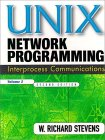
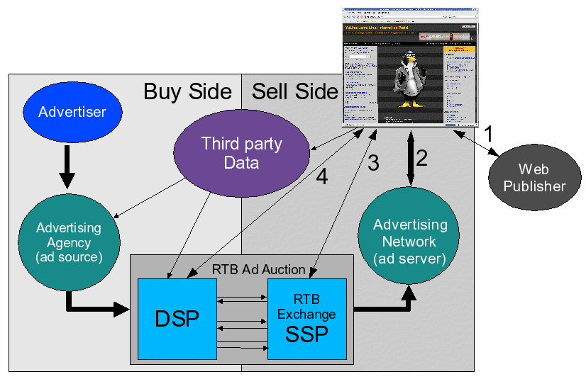

Also on YoLinux

Linux Tutorial: Add an additional …
Adding a new disk drive to your PC computer. The YoLinux portal covers …

Public Domain Music
Public Domain Music. Sources for free music for public royalty free …

GoogleTest: C++ unit test …
Googletest: C++ unit test framework for regression testing of C …

Internet Online Advertising
Internet advertising. Complete list of ad networks, brokers and …

Linux: Init Process and PC Boot …
Linux init and boot process tutorial and description.
UNIX For DOS Users
Linux commands for DOS and MS/Windows CMD shell users. Linux …
VI and VIM editor: Tutorial and …
VI and VIM Linux editor tutorial of advanced editing features and …
Linux Network Configuration
Linux networking commands, network monitoring tools, …